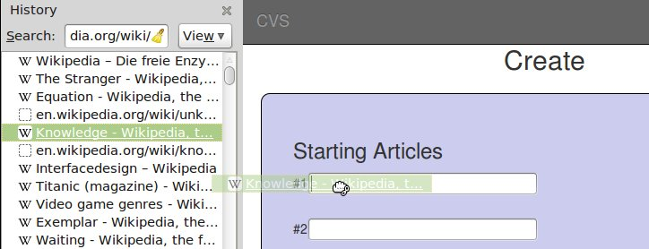
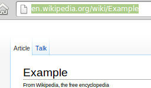
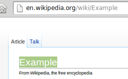
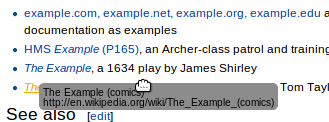
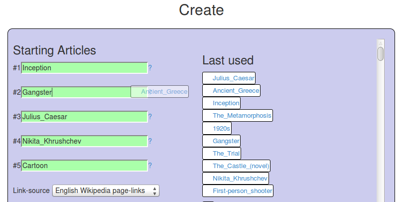

Create your own Wikipedia Map:
choose starting-articles and link-language, browse the visualization, filter the interesting Nodes, download and share your visualization.
This is a visualization shows a description of this project as interactive browsing example.
Zoom by using the mouse wheel or a scrolling or zooming gesture
(depends on your device)
Drag by clicking and holding on the background
Focus a node by clicking on it once
all non-neighbor nodes and edges will be hidden
Open an article by clicking on a node a second time, after focusing
the article opens in a window or tab
Unfocus by clicking on the background
This is the self describing example
Test controls here! open in viewer
filter
Filter the visualization by different Attributes!
See whats "hidden" from you. Hidden means that it isn't linked by the source nodes you initially choose. While browsing from the start nodes this articles cant be reached even if they are Linked. Use the Hidden Context facet to focus on the "Hidden" context.
Futher Filters:
See IF DBpedia holds a class for an Article. Articles are typed by DBpedia if possible. See what classes are used and what articles have no class attached.
download/share
All the output you have produced is available for download under a Creative Commons License. Feel free to reuse, remix etc. The output is a gexf file which is easy to read and ready to be interpreted by software like Gephi. Include the gexf file into your own Website by using sigmajs.
found something awesome, surprising or interesting show it to your friends and co-workers. Press the share link and copy+paste the link into any Social Network, Email or Text-processor.
The hash helps you keeping track of your visualizations and suggests.
on other computers/devices
if you don't stay logged in (unchecked the box)
The hash is anonymous as long as you don't share it with others
It helps me keeping track on what is going on here without knowing exactly who you are and Where your from etc. (remember this is part of my thesis)
How to use?
To create your own visualization enter the Wikipedia links or headings of the topics you want to explore.
Use the English Wiki-links or headings even if you are using the German links to visualize!
Use your browser History
Open your Browser History and check out what wiki articles you have browsed. Press Ctrl+H / ⌘+H to open your browser history
enter as Filter.
Drag and drop the URLs of the Wikipedia Articles you have visited into the Fields!

Remix Examples
The Examples can be remixed, just add or replace articles.
Here all ways are shown how to add the article example to your input collection.
Just type the phrase "Example" into an input field
The Input Fields disambiguates your Input. So its it translate the alternative spellings of articles titles and changes them to the Exact Identifier.
On the right of the Input fields the last links you used and the visualizations you created are stored. Also the examples from the Examples-section are stored in the Menu. If You want to select single links and add them to your field just Drag and Drop them into the input-fields by catching them on the white background of the box they are in.
Copy the URL form the address-bar: "http://en.wikipedia.org/wiki/Example"
 Copy+Paste the title of an article: "Example"
 drag and drop links into the fields (this is supported by most modern browsers).
 Browse wikipedia in a window or tab and collect the article identifiers afterwards by using the back-button of your browser.
How to reuse found articles
On the right of the Search Fields there is a menu that shows your Last used articles, the section "My Visualizations" for the last visualizations you have created and the Examples. These Sections contain links to articles. These article bubbles can be dragged and dropped straight into the search fields.

Tips
Be specific choose specific topics. The more general a topic is the more nodes will end up in the Results. This crowds the output with nodes and makes it harder read the result. Work with examples or choose specific articles.
Examples: If you are looking for music choose an don't choose a broad genre as start node. Don't use Heavy_metal_music use Power_metal.
If you are looking for cities try not to take more than one. Cities can have a lot in common For example public transportation, countries or continents they are in. If you are interested in transport choose the article Transport in Cologne in favor of Cologne.
Just one more Choose more than 3 topics for input! Choose one oder two more to get more interesting results. Adding more topics won't restrict the result as in other searches.
Examples: Add a year or a century like the 1960s or 1996 to show the Time Context
Don't get Confused Articles describe specific things and sometimes there are Synonyms. Do not Confuse them
Examples: Cologne and Eau de Cologne .
Batman as a general idea of Batman and Batman (TV Series) featuring Adam West and a lot of Booooom's and WHAM's .
Background
Motivation
Wikipedia is one of the largest on-line information resources. There is an article concerning nearly everything of common interest. Reading the whole wikipedia would take more than a life time.
Wikipedia articles are linked to other articles. They create a gigantic network of links.
The motivation of this page is to get a little more oversight of the facts and connections which are part of the Wikipedia. To get the birds eye view of Wikipedia we have to focus a part of of the whole we want to focus. This focus should describes a field of articles that interrelate.
For whom?
This site has no special Audience. But it may be op special use for some user types.
The wikipedia consumer
The consumer can get an overview of the articles and the fields their interested in.
Wikipedia authors
For wikipedia authors this project can show whats on their field and whats link's with "their" articles.
The semantic Web /Linked Data enthusiast
The Filters show where the Semantic Wikipedia ends and where the ontology of DBpedia has its practical limits. Especially what was classified in this DBpedia version and what not!
The bias concerned
In the last month there has been a lot of press about the focus of Wikipedia and the lack of female authors. This visualization may help to identify the spots where the Wikipedia is more "complete" and "representative" where it seems to be more biased and incomplete. Even if the bias will be reduced it shows the state before.
How to choose what you are Interested in?
The Answer this page offers is to choose some central articles and let the links define the Part of the whole you are seeing. Like you let the Keywords define the data you get presented by an search-engine.
The following tool creates visualization out of topics represented by Wikipedia articles. Between these topics the context is represented in the form of linked articles. Its like searching in a search engine like Google where you type search Terms into a search-bar. Except that the terms are defined by articles not by words. This helps not to get confused by homonyms, like Springfield as a city name. They can also be much more detailed than the literal based search term. The context shows other articles which lie between the articles you initially choose. These context also interrelate and show how good represented they are in the complete context.
The main difference to a normal search result is that it isn't a list of links! Its kind of a map. So you've got more information, what searchterm an article tends to.
Use your browser History
Open your Browser History and check out what wiki articles you have browsed. Press Ctrl+H / ⌘+H to open your browser history
enter as Filter. Drag and drop the URLs of the Wikipedia Articles you have visited into the Fields!
Hidden from browsing
A reason for this project was to explore back-links. These back-links create hidden articles. These Articles do NOT show up when browsing the Wikipedia from the start-nodes. They only link the start nodes but the start nodes don't link back.
Checkout the HiddenContext filter in the visualization!
See whats special
You enter your search by Wiki Articles you allready visited or know about. Showing the obvious connections does not give you any information. In The Result the special things are emphesized. A big node is special. A red node is central.
Whats Known?
The Wikipedia is incomplete by design but its open to everyone to participate.
The DBpedia project has information about the Type of an entity in Wikipedia has. Like Place for things like New York, The Netherlands, Bari etc. But they are not complete.
As a consequences for this Project:
A specific "time" is taken as a reference point. This time is described by a version, in this case its DBpedia version 3.9.
Discuss
Wikipedia is all ways on change and only specific people participate ion Wikipedia. They construct it and also choose its focus.
A focus that is important for the gigantic number of passive users that use Wikipedia as an encyclopedia. This project visualizes these focuses to makes them Shareable and for Discussion.
Long living static results
A lot of projects on the web "die" after the Author changes his live and focuses on something new. The complex machinery of of Databases and Software stops working and there is no one left starting it again. This is a largely observable phenomena, especially in academia.
To avoid this Problem and make it easy maintainable this project relies on NON hard to maintainstaticself sufficientreference able software core.
This means:
The possibility of creating new visualizations may stop after the project is over.
BUT
The visualizations you created will be reference able on a long term. They only rely on client side technology (Java-script, HTML5). They only need Hosting by a Web-server and no maintenance of Databases and other dynamic sources.
AND
You can download them and archive, modify, analyze them for your self.
So all the things you created will be reference able more or less long term and they will more or less look the same.
Tech and Theory
What's shown?
The visualization uses the links of Wikipedia articles. They are provided by the DBPedia Project. right now its using the generalized Uris with the English and German-Wikipedia-links from DBPedia Version 3.9.
The process looks for links that interrelate the topics. So there are just contexts displayed which have links to at least two of the topics entered.
If there is too much context the process will automatically filter. Numerous contexts between just two topics will be filtered for reasons of readability. The more general the topic are the more likely it's context is being filtered.
The visualization also takes passive links into account. If you just look at the articles of the topic you choose. You won't be able to find them, because the topic articles don't link them. But the topics are linked by them.
These nodes are called Hidden Contexts, because they cant be found exploring from the start-nodes.
Lists and categories are ignored because they tend to be incomplete and confusing.
The types attached by DBpedia (only by DBpedia ontology) are browse able by facet.
They show you if and how an article is classified by the DBpedia Project. This should help you Filter, but its also a good Indicator for normal user to see what automatic data discovery identifies and how the world view of DBPedia, the DBPedia Ontology, is structured. For experts it good to identify the border of the semantic DBpedia by types.
Why
A lot of project have used DBpedia Data in an exploitative manner. But the Semantic web People centered their attention on the Semantic Links. These datasets are relatively sparse. The Page Links on the other hand form a very dense Network. Dense data tends to be very hard to visualize. This projects try's to face this problem by selections, like other Projects do with more specialized datasets. for example Rel Finder and Linked Jazz.
How could anything not interrelate? The large sum of links also Indicates that everything is related to everything else. This wouldn't be a good data.
But how good are the links and how does the Picture the Wikipedia Links which are created by Humans also represent the structures of human association. In short term, does the picture this visualization creates correspond with the picture you already got in your head? Is there more to be discovered or does Wikipedia only show relations so common that everyone is a better expert than wikipedia is?
This project uses modern browser features, please use up to-date browsers! Only modern versions of Firefox, Chrome/Chromium and Safari are supported. The Microsoft Internet Explorer may also work in Versions in versions over 7, but this is not tested nor is all functionality guaranteed.
All Download able Data is licensed under the CC BY-SA 3.0 License and is based on the data of DBpedia.org and therefor on Wikipedia.
The Software is tying to keep your data as anonymous as possible please keep your hashes private!
Created by Rasmus Krempel r.Krempel_at_uni-koeln.de

{kind=link}
{kind=link}
{kind=link}
{kind=link}
{kind=link}
{kind=link}